将机器人钥匙开关打至手动状态，并将机器人调整至合适位置，可参考上图位置（要点：要使电机处于限位，防止向下倾斜），调整完毕后，将控制柜电源打至“OFF”状态。接着用26mm扳手松开放油孔螺栓放出齿轮油，完毕后重新上紧。
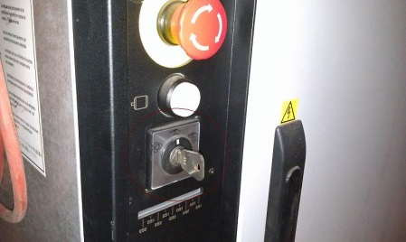 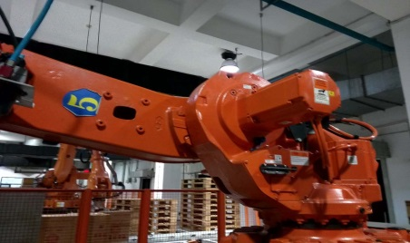
可参考下图姿势，注意使3轴电机处于限位位置。
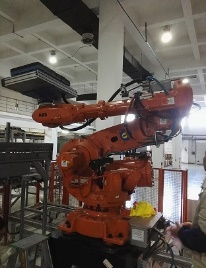 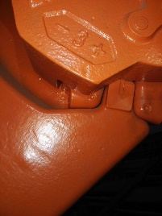
使用8mm六角匙松开支架固定螺丝，拆下支架。
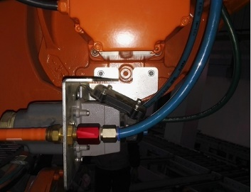
用T30星型套筒拆下2轴电机后盖上的四颗星型螺丝后，松开后端盖并将电源线拔开。
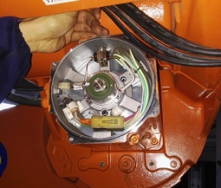 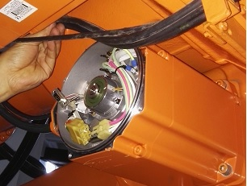
用8mm六角匙拆下4粒固定螺丝后拆下旧电机后对接口处进行清洁保养。
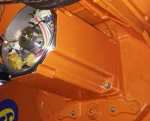 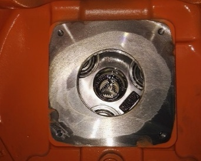
更换新电机并用8mm六角匙上紧螺丝，接好电源线后，接着用T30星形套筒上紧后盖螺丝。
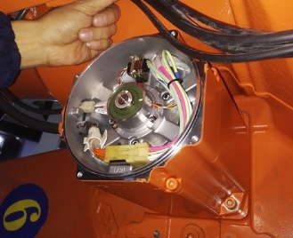
用8mm六角匙装回支架并按原位接好
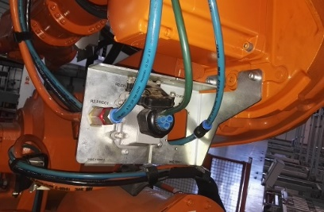
手动控制机器人3轴，使3轴处于零基准位，上下缺口对准
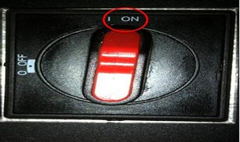 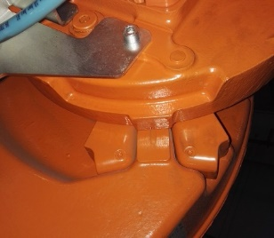
使用示教器对参数进行校准
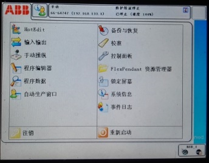
用10mm六角匙松开注油孔及溢油孔，并加注齿轮油至溢油，然后上紧